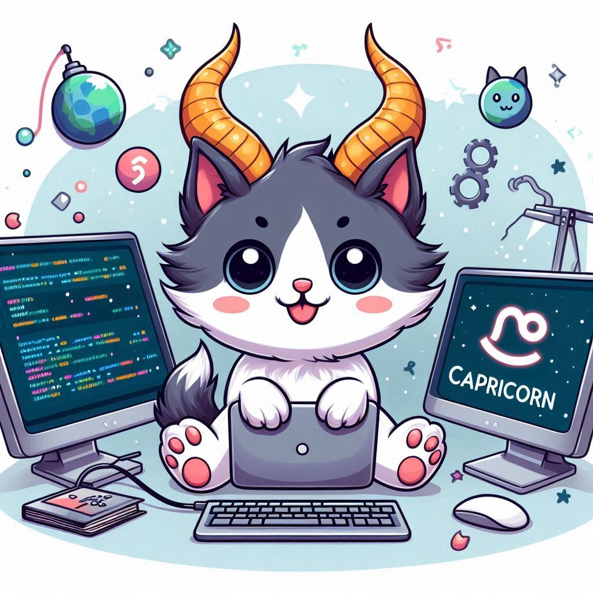

This month, your determination and discipline will be your greatest assets in your coding projects.
As a
Capricorn, you possess a natural ability to set goals and achieve them through hard work and
perseverance.
Your coding endeavors may require extra effort and dedication, but trust in your ability to overcome
any
challenges that arise. Take a methodical approach to your work, and you'll find success in even the
most
difficult tasks.
June will bring a surge of creative energy, encouraging you to think outside the box. Use this time
to
experiment with new ideas and innovative solutions. Your unique perspective will set you apart.
Remember, persistence is key. Even when faced with obstacles, your steadfast approach will lead to
breakthroughs and achievements that will make you proud.
Learning and Development
This month, your determination and discipline will be your greatest assets in your coding projects. As a
Capricorn, you possess a natural ability to set goals and achieve them through hard work and
perseverance.
Your coding endeavors may require extra effort and dedication, but trust in your ability to overcome any
challenges that arise. Take a methodical approach to your work, and you'll find success in even the most
difficult tasks.
Personal Growth
Remember to balance your work with personal growth. Take time to reflect on your achievements and set new
goals for the future. Incorporating mindfulness practices or short walks into your daily routine can
help
you stay focused and energized.
Don't hesitate to collaborate with your peers. Sharing ideas and insights can lead to breakthroughs and
new
perspectives. Remember, teamwork makes the dream work, and your contributions to group projects will be
invaluable.
While you focus on your coding tasks, remember to take breaks and prioritise self-care. A balanced mind
and
body are essential for sustained productivity and creativity. Incorporate mindfulness practices or short
walks into your daily routine to recharge and stay focused.
Career
Your career prospects look promising this month. Your meticulous work ethic and attention to detail are
being noticed by colleagues and superiors. This is a great time to take on more responsibility or
propose innovative ideas that can drive your projects forward. Stay open to feedback and use it to
refine your skills. Your dedication will pave the way for future advancements and recognition.
Lucky days for coding: 8th, 15th, 22nd
Power color: Green
Embrace the challenges and opportunities that come your way this month, and let your coding skills shine
bright!